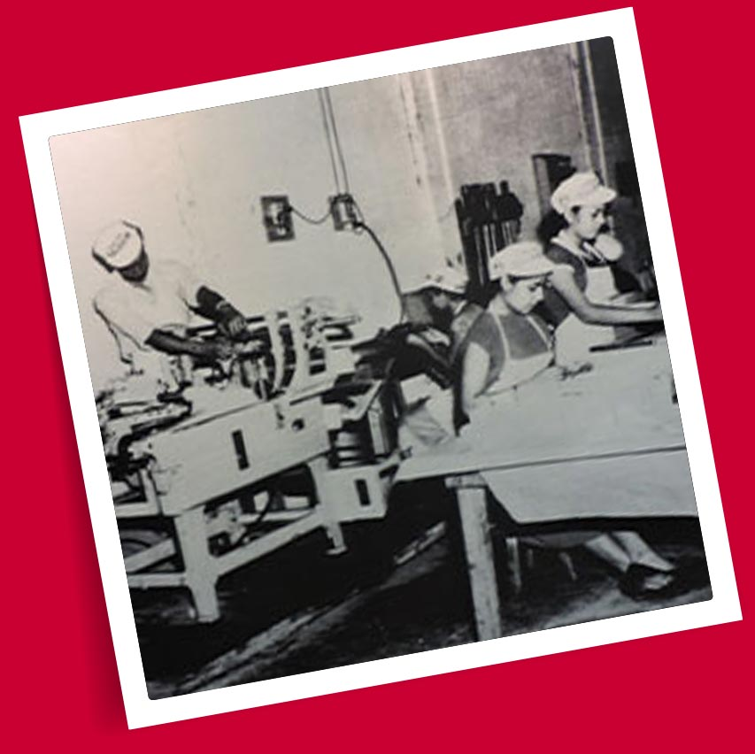
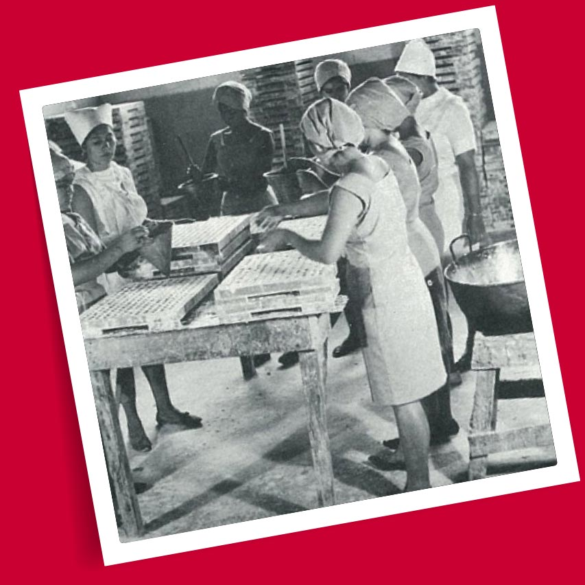
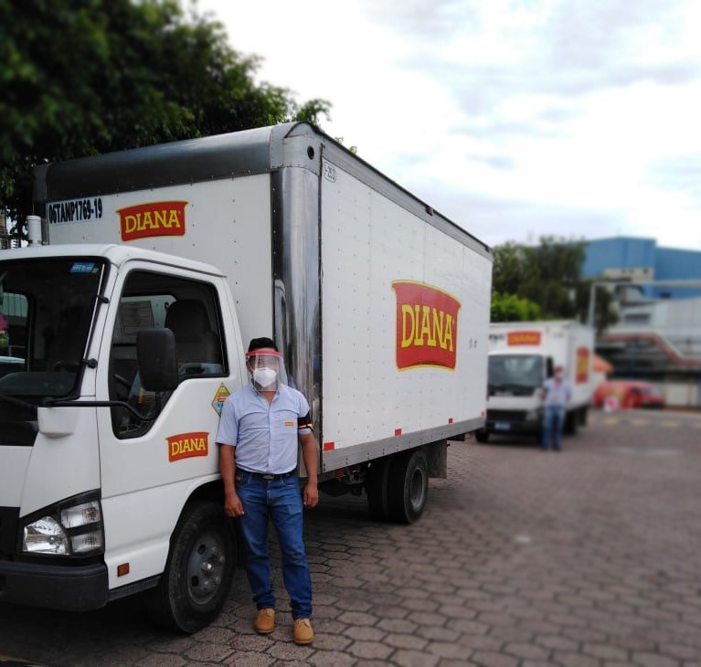
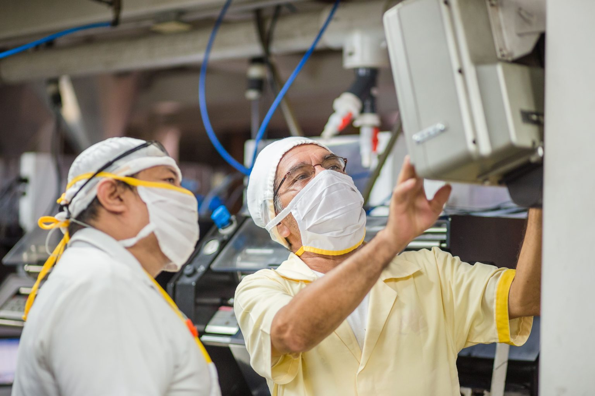

por Max Olano y Pablo Tesak en un pequeño garaje en el barrio de Mugdan en San Salvador, El Salvador. Allí comenzaron con la producción artesanal de bocadillos y confitería. En 1952 la empresa producía tan solo cuatro productos: dulces de caramelo, maní salado, jaleas y galletas.
Durante un período de cinco años, DIANA tuvo un crecimiento de ventas y fue necesario reubicar la fábrica a instalaciones más apropiadas, en un pequeño almacén en el barrio de San Esteban de San Salvador.
DIANA comenzó a distribuir sus productos en bicicletas, y no fue sino hasta 1957 cuando la compañía adquirió dos camiones para servir a más regiones de todo el país..
PARA 1958
DIANA comenzó a exportar sus productos a Honduras, Guatemala, Belice, Nicaragua y Costa Rica; y en 1978 expandió sus rutas a los Estados Unidos.
El aumento en los volúmenes de ventas obligó a la compañía a cambiar su ubicación y en 1962 se mudó a un almacén más grande en Barrio La Vega, San Salvador, donde estuvo hasta 1970. Fue así como DIANA fue creciendo y ampliando su producción y portafolio de productos, convirtiéndose en el líder del mercado salvadoreño.
Desde los años noventa hasta el presente, DIANA ha realizado importantes inversiones para continuar satisfaciendo a sus consumidores con su portafolio de productos, consolidándose como la empresa líder en bocadillos, en el mercado nacional y regional.

HASTA LA FECHA
DIANA satisface a sus consumidores en 7 países: El Salvador, Guatemala, Honduras, Nicaragua, Costa Rica, Belice y EE. UU., con su oferta de marcas icónicas que se han construido sobre una sólida herencia. Actualmente DIANA cuenta con 18 centros de distribución en toda la región (incluyendo 4 distribuidores externos adicionales). La compañía comercializa más de 50 marcas entre productos salados, confitería y galletas, con una cartera de más de 270 SKUs. En El Salvador, DIANA tiene 5 plantas y 3 centros de fabricación periféricos: una convertidora (producción de material de embalaje primario y secundario); una planta de sémola (limpieza de maíz y molino); y una refinería (refinería de aceite de palma y manteca).
A FINES DE 1951
(año en que DIANA comenzó a operar) tenía solo 14 empleados. Luego, con el crecimiento de operaciones a través de los años, a principios de los 70, ya contaba con más de 1,600 empleados en El Salvador y más de 150 en Guatemala. Actualmente, en toda la región Centroamericana, DIANA emplea a más de 4,000 personas. En El Salvador, brinda empleo a 3,100 personas, posibilitando que numerosas familias salvadoreñas procuren su sustento diario en sus hogares. De forma indirecta, los productos DIANA benefician a aproximadamente 200 mil comercios, grandes y pequeños clientes. Asimismo, la empresa cuenta con una de las flotas de distribución más importantes de la región, que lleva más de 65 mil toneladas de alimentos a más de 50 millones de consumidores.

PROPOSITO DE DIANA
En Diana nacimos para estar cerca de ti. Y esa frase, que parece tan simple, nos mueve a los más de 4,000 colaboradores en la región, a despertar día a día para hacer realidad este compromiso ¡que nos engrandece!
“Cerca de ti” nos impulsa a entender a cada consumidor, cliente y colaborador, a conocer su forma de enfrentar al mundo como medio para expresar su identidad. Por eso, en cada uno de nuestros productos y acciones, buscamos representar esas cosas que nos diferencian.

Estar “Cerca de ti” transforma nuestro sabor para ser compañía, ser esa parte esencial de millones de historias que construimos juntos, esos buenos momentos que se celebran cuando hay que hacerlo y ese espíritu que encuentra fuerzas donde no las hay para darle la vuelta a las cosas cuando no vienen tan bien.
¡Trabajamos duro para eso y no pensamos parar! En DIANA seguimos construyendo juntos una historia que se va edificando bocado a bocado, ritual a ritual y emoción a emoción, siempre ¡Cerca de ti!
NUESTRO EQUIPO DE TRABAJO
Desde El Salvador, los últimos 69 años DIANA ha llevado sabor y alegría a sus clientes en Centroamérica y Estados Unidos, gracias al trabajo de un equipo de más de 4 mil personas, que día a día entregan lo mejor de sí. Trabajamos todos los días para estar cerca de nuestros Clientes y Consumidores, con productos de calidad y con el sabor inconfundible que los caracteriza, que en una amplia gama de boquitas, dulces y galletas, nos ha permitido acompañar la historia de miles de personas, convirtiéndonos en la marca predilecta de boquitas en Centroamérica.
Los que trabajamos en DIANA, nos sentimos orgullosos de ser parte de una empresa salvadoreña, sólida, que valora la innovación, que se preocupa por nuestra salud y bienestar y que busca impactar de manera positiva a la comunidad. Tenemos la oportunidad de desempeñarnos en un entorno laboral que impulsa nuestro crecimiento personal, profesional y nos hace parte de la transformación corporativa, lo que nos motiva a desarrollarnos junto a los objetivos de la organización. En DIANA, nos estamos transformando y queremos que tú seas parte de nuestra historia.
Total de empleados en la región: 4,083.

Comportamiento empleado de DIANA
Soy incluyente y trabajo en equipo.
Me importa y valoro a la gente.
Entiendo la raíz del problema y lo resuelvo.
Entrego resultados con excelencia.
Soy protagonista de mi propio desarrollo.
Soy responsable y aseguro el resultado final con éxito.
PRESTACIONES
DIANA reconoce el esfuerzo y la dedicación de todos sus colaboradores y por esa razón ha establecido prestaciones que van más allá de lo requerido por la ley. Con esto se pretende además de reconocer el trabajo del equipo, apoyar el bienestar de las familias de los colaboradores de la empresa.
Algunas de las prestaciones más significativas son las siguientes:
·
Clínica Médicas.
Hay servicio de medicina general, odontología, ginecología y pediatría. Además de atender a las personas que laboran en la empresa, se atiende a sus hijos hasta de 15 años. Las medicinas y tratamientos odontológicos, incluyendo prótesis, son gratuitos.
·
Complejo Deportivo Diana.
Este es el lugar donde los fines de semana las personas que trabajan en la empresa pueden disfrutar junto a sus familia de momentos de relajación y diversión. Hay canchas deportivas y piscinas, además de kioscos donde cada familia puede pasar el día y descansar da las actividades de la semana.
·
Torneos Deportivos.
Se ha creado un programa de intramuros para que las personas que disfrutan del deporte puedan participar en estas actividades. Hay unos 16 equipos de fútbol, 7 papi fútbol, 4 de fútbol femenino, y con la participación de otras empresas se organizan 12 equipos de baloncesto. Con esto se promueve el compañerismo y el trabajo en equipo y ayuda mucho a bajar el estrés del día a día.
·
Escuelas Deportivas.
Como un beneficio adicional, DIANA ofrece a los hijos de sus colaboradores, sin costo alguno, la escuela de fútbol y la de natación. La escuela de fútbol está dividida en categorías en las que participan niños desde 6 hasta 18 años. La escuela de natación ofrece cursos para que los niños puedan aprender a nadar desde una temprana edad y con las diferentes técnicas de competencia.
·
Cursos de verano.
Hay establecido un curso de veranos que da inicio unos días después que los niños han salido de sus clases regulares. En este curso, además de ofrecer un refuerzo académico a los niños, se han implementado clases de teatro, de arte y de manualidades. Al final del curso los niños presentan una obra de teatro como parte de la clausura.
Además de lo mencionado arriba, DIANA motiva a sus colaboradores con la distribución de productos de canasta básica dos veces por mes, premios por antigüedad, regalo navideño, y otras bonificaciones.
NOS ENORGULLECE QUE A LA FECHA
PRODUCIMOS
65 MIL toneladas de sabrosos productos al año.
EXPORTAMOS
45 MIL toneladas, llegando a 50,000 millones de consumidores.
VALORES DIANA
EXCELENCIA:
Constantemente evidencia calidad en sus entregables, sobrepasa expectativas y establece prioridades adecuadamente. Busca continuamente la mejora.
LIDERAZGO Y DESARROLLO DE EQUIPOS:Escucha, comunica, empodera, retroalimenta y dirige al equipo. Motiva y desarrolla en otras accciones clarass que contribuyen al logro de los objetivos organizacionales.
ORIENTACION A RESULTADOS:
Toma la iniciativa y busca el crecimiento permanente de sus resultados, sabe tomar decisiones y superar obstaculos.
ORIENTACION AL CLIENTE/CONSUMIDOR:
Conoce al cliente y orienta su hacer al desarrollo de relaciones duraderas con ellos, a traves del establecimiento de mecanismos que garanticen la satisfacción del cliente/consumidor.
 INICIO
CONOCE A DIANA
PRODUCTOS Y SERVICIOS
CONTACTANOS
INICIO
CONOCE A DIANA
PRODUCTOS Y SERVICIOS
CONTACTANOS
{kind=link}